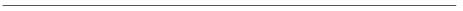

BÖLÜM 14

EŞİTSİZ VE BİLEŞİK GELİŞME

Warren’in çalışmasının Stalinist teori ile WEFA’nın ortak paydasını hedef aldığını, emperyalizmin azgelişmiş ülkelerde kapitalist gelişmeyi engellemek bir yana bu yönde güçlü bir itilim yarattığını savunduğunu görmüş bulunuyoruz. Ama, öte yandan, Warren, kendisinin farkında olmadığı bir süreç içinde, WEFA’ya karşıt olarak Stalinist teoriyle ortak bir yargıyı paylaşmaktadır. (Bu yargının modernleşme okulunda da mevcut olduğuna daha önce değinmiştim.) Bu ortak yargı, kapitalizmin gelişmesinin her yerde aynı biçime büründüğü, her yerde aynı sonuçları doğurduğu ve her toplumun tarihsel gelişmesi içinde kapitalist aşamadan geçmesinin zorunlu olduğudur.
Tarihsel maddeciliğin öncülerinin bu soruna bakışları çok farklıdır. Marx, feodalizmden kapitalizme geçiş süreci konusunda Kapital’de geliştirdiği açıklamanın tarih-ötesi bir yaklaşımla ele alınmasına, soyut bir tarih felsefesi haline getirilmesine şiddetli biçimde karşı çıkmıştır. Bu açıklama sadece Batı Avrupa toplumlarının özgül tarihsel gelişiminin çizgilerini vermektedir Marx’a göre. Öteki toplumların, özellikle de Avrupa-dışı toplumların nasıl bir gelişme göstereceği/gösterdiği ancak somut tarihsel gelişme içinde incelenebilir.197 Öte yandan, gerek Marx gerek Engels, 1875’ten itibaren ama özellikle de 1880’li yıllarda Rusya’nın tarihsel gelişmesini irdelerken, Batı’da bir sosyalist devrimle birleştiği takdirde Rusya’nın kapitalist aşamadan geçmeden sosyalizme geçiş aşamasına sıçrayabileceğini açık açık savunmuşlardır.198 Kısacası, Marx ve Engels’in Avrupa-dışı toplumların kapitalizm karşısındaki konumları konusundaki düşünceleri şöyle özetlenebilir: (1) Kapitalizm-öncesi toplumdan kapitalizme geçişte bütün toplumların izlemesi gereken tek bir yol yoktur. (2) Her ülkenin mutlaka kendi başına kapitalist aşamayı yaşaması zorunlu değildir. Bunlara Marx’ın başlangıçtan beri öne sürmüş olduğu üçüncü bir tez eklenmeli: (3) Kapitalizm-öncesi üretim tarzlarına sahip toplumlar, daha ileri bir sosyoekonomik formasyona sıçramadıkları takdirde, mutlaka kapitalistleşeceklerdir.199
Bileşik gelişme kavramı, bu öngörü ve tezlerin, eşitsiz gelişme yasası ve emperyalizm teorisinin ışığında mantıksal sonucuna götürülmesi ve sistemleştirilmesi yoluyla geliştirilmiştir. Trotskiy tarafından önce Rusya’nın kapitalizme geçişinin özelliklerini kavrayabilmek için kullanılmış, daha sonra da öteki azgelişmiş ülkelerin tarihsel gelişmesinin özgüllüğünü açıklayabilmek için “eşitsiz ve bileşik gelişme yasası” (bundan sonra EBGY) adı altında formüle edilmiştir.200
EBGY, kutuplarını evrensellik ile tikelliğin oluşturduğu diyalektik bir çelişki üzerine kuruludur. Kapitalizm tarihte ilk kez gerçek anlamda evrensel bir tarih oluşturmuştur: İnsanlığın hiçbir bölümü, hiçbir ulus artık dünyanın geri kalan bölümünden yalıtılmış bir biçimde gelişemez. Ama tam da evrensel tarihtir ki, insanlığın farklı bölümlerinin, farklı ulus ve toplumların birbirleriyle aynı biçimler altında, özdeş bir süreç içinde gelişmesini engeller. Yani insanlık tarihinin kapitalist çağdaki evrenselliği ifadesini tekil ülkelerin tarihsel gelişmesinin tikelliğinde bulur. Bu tikel gelişmelerin bütünselliği ise evrensel tarihin hareketi düzeyinde kurulur. Buna karşılık, tikellik (özgüllük) evrensel hareketin farklı ilişki, düzey ve alanlarının bir toplum düzeyindeki eşitsiz gelişiminin ürününden başka bir şey değildir.
Somutlaştıralım. Başlangıç noktası eşitsiz gelişmedir. İnsan toplumlarının gelişmesinin temel bir yasası olan eşitsiz gelişme her çağda değişik toplumların farklı gelişme aşamalarında olmasına yol açmıştır. Modern çağın başında eşitsiz gelişmenin asli ifadesi, Batı Avrupa toplumlarının kapitalizme geçişine karşılık Avrupa-dışı toplumların yaşamlarını kapitalizm-öncesi üretim tarzları temelinde sürdürmeleridir. Bu durum yepyeni bir dinamik yaratacaktır: Kapitalizm sınır tanımayan artık emek açlığı içinde tüm dünyaya hızla yayılırken ve dünya pazarını kurarken, insanlığın gelişmesini de evrenselleştirecektir. Bu evrenselleşmenin bir sonucu, kapitalizm-öncesi üretim tarzlarının hâkim olduğu toplumların, kapitalizmin baskısı karşısında ve (Marx’ın deyişiyle) ‘yok olma tehdidi altında’ kapitalistleşmeye başlamalarıdır.
Ama tam bu noktada yine bir çelişkiyle karşılaşırız: Kapitalizmin dünyayı bütünleştirmesi, bir yandan Avrupa-dışı toplumları Avrupa toplumlarına benzemeye, onları taklit etmeye iterken, bir yandan da bu taklidi olanaksızlaştırır. Yeni kapitalistleşmekte olan toplumların kapitalizmin anavatanında yaşanan geçiş süreçlerinin aynısını yaşaması, tam da dünyanın bütünleşmesi dolayısıyla artık mümkün değildir. Çünkü eski kapitalist ülkelerin (hem de bütün ağırlığıyla hissedilen) varlığı yepyeni bir durum yaratır. Böylece, bütünsel bir dünya çerçevesinde, eşitsiz gelişme bileşik gelişmeye kaynaklık eder.
İnsanlığının bütününün bu bileşik hareketi iki farklı biçimde gösterebilir kendini: Bir yandan, daha geri gelişme aşamasında olan toplum, üretici güçleri daha ileri bir düzeyde olan toplumdan yeni biçimleri olduğu gibi devralabilir; öte yandan, daha zayıf bir olasılık olmakla birlikte, ileri üretici güçlere sahip ülke daha geri toplumdan belirli biçimleri devralabilir.201 Buradaki konumuz (azgelişmişlerin gelişmesi) açısından önemli olan kuşkusuz birinci ve esas biçimdir. Bu biçimin tarihsel anlamı, azgelişmiş toplumun dışsal zorunlulukların itişiyle (veya geriden gelmenin yarattığı avantajla) gelişmiş toplumun en ileri biçimlerini, o toplumun yaşadığı tarihsel süreçten geçmeden devralabilmesidir.
Bu devralma, tarihsel olarak özgün bir durumun doğmasına yol açar. Azgelişmiş toplum bazı alanlarda yepyeni toplumsal biçimleri ileri toplumdan olduğu gibi devralırken, bazı alanlarda en eski, en arkaik biçimler yaşamlarını sürdürmektedir. İşte bileşik gelişmenin klasik tanımı budur: Bir toplum içinde çok farklı evrelerin bir araya gelişi, farklı tarihsel aşamaların iç içe geçişidir. Eski biçimlerle yeni ilişki, kurum ve ideolojiler kaynaştığında ise ortaya yepyeni bir sentez çıkar. Böylece, toplum kapitalizm-öncesi üretim tarzından kapitalizme geçiş sürecine girdiği halde, bu süreç birçok bakımdan gelişmiş kapitalist ülkelerin geçtiği süreçten farklı bir nitelik kazanır. Yani geçiş vardır ama aynı yoldan değil.
Eşitsiz ve bileşik gelişmenin azgelişmiş toplumlarda kapitalizmin gelişmesi sürecinde büründüğü sayısız biçimin tüketici bir liste halinde sıralanması ne anlamlı, ne de, daha önemlisi, mümkün. Mümkün değil çünkü EBGY bir genel eğilimden yola çıkılarak formüle edilmiş bir teorik çerçeve. Tekil ülkelerde hangi biçimlerde tezahür edeceği ancak somut tahlil sonucunda kavranabilir.
Biz burada sadece bir fikir vermek bakımından EBGY’nin sonucunda ortaya çıkabilecek bazı özgün toplumsal durumlardan örnekler vermekle yetineceğiz.
- Eski ile yeninin, aradaki geçiş süreci yaşanmadan ve aynı toplumsal yapının öğeleri olarak bir araya gelişi, eski geçişlerden farklı yeni bir sentez yaratır. Örneğin, yaygın meta dolaşımıyla (ticaretle) arkaik kapitalizm-öncesi üretim ilişkilerinin sayısız azgelişmiş ülkede uzun süre iç içe yaşaması böyle bir sentezin ifadesidir. Veya (Afrika’da olduğu gibi) kabilelere dayalı bir toplum yapısının tepesine modern bir devlet aygıtının yerleştirilmesi (bu aygıt ister bir sömürge devleti olsun, ister “ulusal” bir devlet) yepyeni, tarihsel olarak özgün çelişkilerin patlak vermesine yol açar.
- Gelişmiş ülkelerin uzun bir tarihsel kuluçka döneminden sonra ulaştıkları en gelişkin biçimler, azgelişmiş ülkede ara evreler yaşanmadan, başka bir deyişle organik büyüme süreci deneyiminden geçilmeden birdenbire ortaya çıkar. Emek sürecinde, Batı’da yaşanmış olan basit kooperasyon ve manifaktür dönemleri üzerinden sıçrayarak birden modern fabrika dönemine geçer azgelişmiş ülke. Sermaye yapısı açısından ise, küçük sermaye birimlerinin rekabetine dayanan bir dönemden geçilmeksizin, erkeden tekellerin hâkim olduğu bir piyasa yapısı doğar ve finans kapital gelişir.
- Toplumsal yaşamın farklı alanlarına (ekonomi, siyaset, hukuk, ideoloji vb.) veya farklı iktisadi sektörlere yeni biçimlerin girişi çok farklı bir tempoda olabilir. Bu yüzden, toplumda farklı alanlar arasında çok eşitsiz bir gelişme doğar. Burada, dünya çapında eşitsiz gelişmenin bir ürünü olan bileşik gelişmenin bu sefer tekil toplum düzeyinde farklı alanlar arasında yeni bir eşitsiz gelişmeye yol açtığını görüyoruz.202 Farklı toplumsal alanlar arasındaki eşitsiz gelişmenin klasik örnekleri, birçok azgelişmiş ülkede askeri örgütlenmeden düşünsel alana kadar birçok alanın iktisadi gelişmeden çok önce yeni biçimleri devralmasıdır. Farklı iktisadi sektörler arasındaki eşitsiz gelişmenin en açık tezahürü ise, tarımda bir devrim yaşanmadan ve bazen hiçbir modernleşme olmadan sanayi kesiminin hızla kapitalistleşmesidir.
- Bu özgün gelişme, sınıfların gelişimini de çok eşitsiz biçimde etkiler. Bu durumun klasik örneği, yabancı sermayenin ve devlet kapitalizminin önemi dolayısıyla proletaryanın burjuvaziden çok daha erken ve hızlı büyüdüğü ülkelerdir. Ayrıca, farklı toplumsal gelişme aşamalarının iç içe geçişi bu farklı aşamaların sınıfları arasında daha önce görülmeyen tipte kaynaşma ve/veya ittifaklara da yol açabilir (örneğin toprak sahipleri ile kentsel burjuvazinin ilişkileri vb.)
- Dünya tarihinin bileşik gelişmesi çerçevesinde bir varoluş mücadelesi veren azgelişmiş ülkelerde iktisadi gerilik ancak siyasal iktidarın daha güçlü ve baskıcı niteliğiyle ödünlenebilir. Buna dünya çapında işçi sınıfının gelişmişlik derecesi ile azgelişmiş ülke burjuvazisinin azgelişmişliği arasındaki çelişki de eklenince bir eğilim olarak azgelişmiş ülkelerde kapitalizmin gelişmesi açık biçimde baskıcı devlet biçimlerine yaslanır. Tekil ülkelerde gelişmenin yönü kuşkusuz sayısız somut koşul tarafından belirlenecektir ama bir kural olarak yirminci yüzyılda azgelişmiş kapitalizmin gelişmesinin siyasal demokrasinin kökleşmesiyle çelişki içinde olduğu söylenebilir.
- Son olarak, geriden gelmenin azgelişmiş ülkeye yüklediği sıçrama zorunluluğu, zaman zaman burada daha yeni, daha olgun biçimlerin gelişmiş ülkelerden daha önce bile görülmesine yol açabilir. Bu bileşik gelişmenin sonuna kadar gelişmiş halidir. Devlet kapitalizminin önce geriden gelen ülkelerde (Japonya, Türkiye, Latin Amerika vb.) görülmesi, gelişmiş ülkelerde (üstelik ABD gibi önemli istisnalarla) ancak İkinci Dünya Savaşı sonrasında yaygınlaşması (savaş dönemleri geçici, istisnai dönemler olarak bir kenara bırakılabilir) bunun en belirgin örneğidir.
Son bir noktaya değinerek EBGY konusundaki tartışmayı kapatalım. Yasanın formüle edilmesinden bu yana gelişen bir durumun EBGY’nin içeriğini daha da zenginleştirdiği kaydedilmeli. SSCB’den sonra dünyanın başka ülkelerinde de sosyalizme geçiş toplumlarının ortaya çıkışı, özellikle İkinci Dünya Savaşı’ndan sonra bazı azgelişmiş ülkelerin, sadece gelişmiş kapitalist ülkelerin değil, bu geçiş toplumlarının da kendi koşullarından çok daha gelişkin toplumsal biçimlerini (planlama, büyük çapta kamulaştırma vb.) devralmalarına yol açmıştır. Böylece, henüz kapitalizme geçişin sorunlarıyla boğuşurken, sosyalizme geçiş aşamasına sıçramadan o aşamanın bazı yönlerini sosyoekonomik yapısına aşılayan özgün ve melez bir toplum tipi daha ortaya çıkmıştır. Bu toplumların sosyalizmle hiçbir ilişkisi yoktur kuşkusuz, “Afrika sosyalizmi” ya da “Arap sosyalizmi” adından başka, ama çoğunlukla kapitalizm-öncesi yapılarına bu yeni ve daha ileri biçimlerin (belki de eğreti biçimde) bitiştirilmesi gelecekleri açısından, sonuçta varacakları yer kapitalizm olsa bile, kuşkusuz belirleyici bir önem taşıyacaktır.
EŞİTSİZ VE BİLEŞİK GELİŞME IŞIĞINDA AZGELİŞMİŞLİK
Bir önceki bölümde azgelişmişlik teorisinin en önemli üç sorunu şöyle özetlenmişti: Azgelişmiş ülkelerin tarihsel gelişmesinin bugünün gelişmiş kapitalist ülkelerinin geçtiği yoldan geçip geçemeyeceği; azgelişmiş ülkelerde kapitalist gelişmenin ve sanayileşmenin olanaklı olup olmadığı; bu toplumların gelişmesinde içsel etkenlerin mi yoksa dünya kapitalizminden yayılan dışsal etkenlerin mi belirleyici olduğu. Gözden geçirilen (sağ ve sol) hâkim azgelişmişlik teorilerinin bu sorulara doyurucu cevaplar getirmediğini görmüştük. Buna karşılık, azgelişmiş toplumların tarihsel gelişmesinin eşitsiz ve bileşik gelişme yasasının ışığında ele alınması, hâkim azgelişmişlik teorilerinin bu konularda karşılaştığı çıkmazları ortadan kaldırabilmek için önemli bir başlangıç noktası oluşturur.
Her şeyden önce, bir bütün olarak düşünüldüğünde, azgelişmişlik teorisinin tekerrür sorunu karşısında sürekli olarak iki karşıt kutup arasında savrulduğunu görüyoruz. Modernleşme okulunun ve Stalinist teorinin, tarihin her toplumda aynı doğrusal şemaya uygun biçimde gelişeceği basitleştirmesine karşı gelişen WEFA (ve “bağımlılık”) okulları, bu evrimci şematizme tepkiyle bu kez her türlü gelişmeyi köktenci biçimde yadsıyorlardı. Warren türü teorisyenler, bu tezi açık biçimde yalanlayan tarihsel gelişmeyi (azgelişmiş ülkelerin bazılarında görülen hızlı kapitalist sanayileşme) evrimci bir doğrusal gelişme şemasını yeniden canlandırma yolunda kullanırken, sanayileşmenin ve kapitalist gelişmenin bu ülkelerdeki özgüllüğünü ortadan kaldıracak, özel olarak da kapitalist gelişme ile siyasal demokrasiyi “yapışık kardeşler” olarak ilan edecekti. Güney Kore’den Şili’ye sayısız örnekte siyasal baskı altında inleyen milyonlar, Warren’in bu peri dünyası kapitalizmi anlayışını kolay kolay paylaşamayacaklardır.
Eşitsiz ve bileşik gelişme yasası, azgelişmişlerde kapitalizmin gelişmesi yönündeki dışsal zorlamayı bu gelişmenin ilk kapitalist ülkelerden çok farklı biçimler alacağı teziyle birleştirerek ve her toplumun aynı yoldan geçmesinin zorunlu olmadığını, dolayısıyla bugünün dünyasında bazı ülkelerin kapitalist aşamayı tamamlamadan sosyalizme geçiş dönemine girebileceğini ortaya koyarak, bu iki kutup arasındaki kısır karşıtlığın sınırlarını aşmanın anahtarını verir. Azgelişmişlerde kapitalizmin gelişmesi olanaksız olmak bir yana, özel bir sıçrama olmadığı takdirde zorunludur; ama bu gelişmenin eski kapitalist ülkelerle aynı yoldan geçmesi zorunlu olmak bir yana, olanaksızdır.
Böylece, bir yandan (kuşkusuz her ülke için somut tahlillerin yapılması koşuluyla) neden azgelişmiş ülkelerin bugünün gelişmiş kapitalist ülkelerinin küçük boy bir modeli olamayacağı anlaşılır; özel olarak da, her ülkenin kapitalistleşme ve sanayileşme süreci içinde eninde sonunda mutlaka demokratikleşeceği beklentisinin (modernleşme, Stalinist teori ve Warren’in ortak beklentisidir bu) neden yanlış olduğu ortaya çıkar. Öte yandan da, yirminci yüzyılın en çarpıcı olgularından biri muamma olmaktan çıkar: Henüz kapitalistleşmenin başlangıç evrelerinde iken, birdenbire birer sosyalist devrim yaşayarak, sosyalizme geçiş döneminin sorunlarıyla yüz yüze kalan nice toplumu maddeci bir temele dayanarak anlama olanağı çıkar ortaya. (Her toplumda yaşanması gereken zorunlu toplumsal aşamalar varsayımıyla Stalinist teorinin alanı içinde kavranamayacak bir olgudur bu.)
Bu tartışma başka bir noktaya da ışık tutuyor: Öteki bütün azgelişmişlik teorilerinin kolaycılığına karşıt olarak, WEFA okulu, tarihin doğrusal ve basit bir gelişme şemasına göre ilerlemediğini sezmiş ve 60’lı yılların ortasından bu yana bu sorunla boğuşmuştur. Bu WEFA okulunun erdemidir.203 Ama sezdiği bu soruna cevap ararken, kapitalizmin özgül bir tarihsel gelişme yolunu (Batı Avrupa’nın yaşadığı süreci) ‘ideal’ bir kapitalizm ile, yani en soyut düzeyde kapitalist gelişmenin kendisi ile özdeşleştirmesi, Avrupa-dışı ülkelerde kapitalizmin gelişemeyeceği türünden yanlış bir sonuca varmasına yol açmıştır. Bu da WEFA’nın temel yanılgısıdır.
Bu yöntemsel yanlışın ne derecede önemli teorik ve siyasal sonuçları olduğunu mutlaka vurgulamak gerekiyor. Kapitalizmin gelişmesi ile gelişmemesi arasındaki yaşamsal fark, geniş bir işçi sınıfının oluşup oluşmaması arasındaki farktan doğar. Bugün azgelişmiş ülkelerin bir bölümünde sanayi proletaryasının çalışan nüfus içindeki payı, bazı gelişmiş ülkelerde rastlanan orana neredeyse eşitlenmiş, bazılarındakini ise geçmiştir. Bunun anlamı büyüktür; bu toplumların siyasal gündemi bundan otuz yıl öncesine göre köklü biçimde değişmiştir. WEFA’nın hâlâ 50’li yılların kalıplarını tekrarlayan eskimiş siyasal retoriği en çok bu nedenle sorunludur.
Bu tartışmadan görüldüğü gibi, kapitalist gelişmenin olanaklılığı sorunu tarihsel tekerrür sorunuyla iç içedir. Burada öteki okullardan farklı olarak en ciddi biçimde WEFA yanılmıştır ama bunun bu yaklaşımın tekerrür sorununda üstün olan kavrayışından doğduğunu görmüş bulunuyoruz. Geri kalan okullar arasında ise, bir yanında modernleşme ve Warren’in, öteki yanında Stalinist teorinin bulunduğu bir kutuplaşmadan söz edilebilir. İlk kutup emperyalizmin (kuşkusuz modernleşme okulu bu kavramı kullanmaz) her tarihsel koşul altında ve her bakımdan gelişme yanlısı bir rol oynadığını ileri sürerken, Stalinist teori ise emperyalist dünya sisteminin her dönem ve koşulda azgelişmişlerde kapitalist gelişmeyi engelleyici bir “misyonu” olduğunu savunur. Tarihsel gelişme (özellikle de emperyalizmle işbirliğinin doruğuna çıktığı Brezilya, Meksika, G. Kore, Tayvan vb. ülkelerin deneyimi) bu tezi yalanlayınca, Stalinist yaklaşım WEFA-tipi bir “çarpık” gelişme teorisine sığınarak bir artçı savaşı vermek zorunda kalmıştır. Bu kavramın (ve karşıtı olarak varsaydığı “gerçek” veya “ideal” kapitalizm kavramının) sorunlarını WEFA’yı tartışırken görmüş bulunuyoruz.
Ama Stalinist teorisinin yanlışlığı, Warren ve modernleşme yaklaşımlarının doğru olduğunu göstermiyor. Yukarıda da belirtildiği gibi, bu yaklaşımlar diyalektik bir süreci tek boyutuyla kavramaktan muzdariptir. Eşitsiz ve bileşik gelişme yasası ise toplumların tarihsel gelişmesinde farklı türden bileşik gelişme biçimlerinin varlığına olanak tanıdığı için, bu yasa çerçevesinde emperyalizmin azgelişmişlerdeki sanayileşme üzerindeki etkisini tarihsel dönemlere ve ülkelere göre farklılaştırmak ve somut olarak tahlil etmek olanaklıdır. Örneğin, yukarıda Warren’in sömürgecilik konusunda kendi kendiyle çeliştiğini görmüştük: Sömürgeciliğin mutlak bir anlamda kapitalizmi geliştirici bir rol oynadığını ileri sürdükten sonra, sömürgelerin yıkılmasının bir ürünü olan ulusal devletleri kapitalist sanayileşmenin bir koşulu olarak sunmakla sömürgeciliğin bir aşamada kapitalist gelişmenin önünde engel haline geldiğini, farkına varmadan, itiraf etmekteydi Warren. Bu örnek son derece aydınlatıcıdır. Sömürge devleti, bir hâkimiyet ilişkisinin yanı sıra bir bileşik gelişme biçimi olarak da görülebilir. Ama bu özgül bileşik gelişme biçimi, yarı-modern bir devlet aygıtı aracılığıyla üreticileri kapitalist dünya pazarına zorla bağlayarak kapitalizm-öncesi ilişkiler üzerinde çözücü bir dinamiğe ilk itilimini verdikten sonra, ticaret sermayesinin ve uluslararası işbölümünün çıkarlarını metropol ülke sermayesi adına savunarak kapitalizmin daha ileriki aşamalarına doğru ilerlemesine engel olabilir. Bir aşamada gelişmenin yolunu açan bir ilişkinin zaman içinde bir engel haline geldiği bu durum (yani aynı ilişkinin hem mahmuz, hem dizgin olduğu bu durum), tek-yanlı teorilerle değil ancak şeylerin çelişkili doğasını kavrayan diyalektik bir tahlil aracılığıyla anlaşılabilir.
İçsel/dışsal belirlenim sorunu ise eşitsiz ve bileşik gelişme çerçevesinde şöyle kavranabilir. Her şeyden önce, kapitalizmin dünyayı bütünleştirdiği ve insanlık tarihini evrenselleştirdiği bir çağda, azgelişmiş toplumun (kuşkusuz gelişmiş toplum için de geçerlidir bu) gelişmesinin belirleyicilerinin sadece içsel olduğunu söylemek olanaksızdır. Eşitsiz ve bileşik gelişme yasası da zaten dünyanın bütünlüğünden yola çıkar. WEFA’nın tavrı da budur ama eşitsiz ve bileşik gelişme yasası için bu sadece başlangıç noktasıdır, WEFA içinse yöntemin bütünü. Bileşik gelişme azgelişmiş toplumda gelişmeye hız verdiği (hatta yer yer gelişmiş ülkeler karşısında belirli avantajlar bile doğurduğu) için azgelişmiş toplumda doğan içsel dinamik bir süre sonra “dışsal” olanın, yani dünya koşullarının belirlenmesine etki yapacak, hatta bu koşulların yeniden-biçimlenmesine yol açacaktır. Yani, bu çağda içsel gelişmeler dünya koşullarından bağımsız olamaz ama dünya koşulları da içsel koşulların belirlediği bir sentezdir.
Bu tür dışsal/içsel diyalektiği için birçok örnek verilebilir. Biz en az tartışma doğuracak örnekle yetinelim. Japon kapitalizminin on dokuzuncu yüzyıldaki gelişmesi bileşik gelişmenin mükemmel bir örneğidir. Batı’dan devraldığı sınai üretim biçimlerini özellikle devlet yatırımlarıyla uygulamaya koyarak hızlı bir atılım yaratan Japon kapitalizmi, bu yeni sınai biçimleri çok daha geri bir tarihsel aşamanın kültürel/ideolojik biçimleriyle birleştiriyordu. Bu bileşik gelişme sonucunda sermayenin işçi sınıfı üzerinde kurduğu özgül tipteki hegemonya Japon kapitalizmine yirminci yüzyılda özel bir üstünlük kazandıracaktı. Bugünün dünyasında olup biten her şeyde Japon kapitalizminin bu özgül niteliğinin özel bir önem taşıdığı göz önüne alınırsa, dünya koşullarının Japon sınıf ilişkilerini etkilemekteki öneminin bir süre sonra bu sınıf yapısının dünya koşullarını etkilemesiyle sonuçlandığı anlaşılabilir.
Maddeci diyalektiğin olgun bir uygulaması olan eşitsiz ve bileşik gelişme yasasının azgelişmiş toplumların tarihsel gelişme doğrultusunu anlama bakımından son derece değerli bir teorik araç olduğu böylece ortaya çıkıyor. Ama bu yasayı da ötekiler gibi yaratıcı biçimde ele almak, sınırlarını iyi saptamak ve her somut durumu kendi somut koşulları içinde değerlendirmek kaydıyla, eşitsiz ve bileşik gelişme yasası, azgelişmişlikle ilgili her teorik güçlüğü çözmeye yarar bir maymuncuk değildir. Azgelişmişlik ve kapitalist gelişme olgularının yirminci yüzyıldaki macerasını anlamak için tarihsel maddeciliğin bize sağlayabileceği teorik araçlardan sadece biridir. Sihirli ve boş bir formül haline getirilmediği sürece, gerçek dünyanın anlaşılmasına önemli bir katkıda bulunabilir.
197 Marx, 1977’de Rus popülisti Mihailovskiy ile giriştiği polemikte bu noktayı kuşkuya yer bırakmayacak biçimde ortaya koyar. Aynı metinden Marx’ın Rusya’nın tarihsel gelişmesinin özgünlüğünü kavrayabilmek amacıyla yaşamının son yıllarında Rusça öğrendiğini de görebiliyoruz. Bu metin değişik yerlerde yayınlanmıştır. Bir örnek için bkz. K. Marx/F. Engels, The Russian Menace to Europe, der. P. W. Blackstock/B. F. Hoselitz, The Free Press, Glencoe, Illinois, 1952, s. 216-218. Rusya’nın gelişmesinin Batı Avrupa ile özdeşleştirilmemesi gerektiğini Marx, Vera Zasuliç’e yazdığı ünlü mektupta da (1881) belirtmiştir. Bk. A.g.y., s. 216-226.
198 Örneğin: “Eğer Rus devrimi Batı’da bir proleter devriminin başlangıç işareti olur ve böylece ikisi birbirini tamamlarsa, günümüz Rusyasındaki komünal toprak mülkiyeti sosyalist bir gelişme doğrultusu için başlangıç noktası oluşturabilir.” Manifesto’nun Rusça ikinci basımına yazılan önsözden. Bk. Blackstock/Hoselitz (der.), a.g.y., s. 227-28. Aynı düşünce belirtik biçimde Engels’in 1875’te yazdığı Soziales aus Russland (Rusya’da Toplumsal İlişkiler) başlıklı kitapçıkta, özellikle de bu kitapçığa 1894’de yazdığı sonsözde bulunabilir. Burada çok önemli bir noktayı da vurgulamak gerekir: Marx ve Engels’in bu tezleri sadece Rusya için değil, kapitalizme geçiş aşamasında bulunan bütün ülkeler için formüle edilmiştir. Engels, son sözü edilen metinde açıkça, “bu, sadece Rusya için değil, kapitalizm-öncesi bir gelişme aşamasında bulunan bütün ülkeler için geçerlidir” demektedir. Bk. Blackstock/Hoselitz (der.), a.g.y., s. 235. Engels’in söz konusu iki metni de bu kaynakta mevcuttur. A.g.y., s. 202-215 ve 229-241.
199 Bu son tez için Marx’ın 1850’lerde yazılmış şu yazılarına bakılabilir: “The British Rule in India”, Surveys From Exile içinde, der. David Fernbach, Vintage Boks, New York, 1974, s. 301-307; “The East India Company-Its History and Results”, a.y., s. 307-316 ve “The Future Results of the British Rule in India”, a.y., s. 319-325.
200 Trotskiy’in bileşik gelişme olgusunu incelediği başlıca yapıtları şunlardır: 1906’da 1905 Devrimi’ni değerlendirmek üzere kaleme almış olduğu Sonuçlar ve Olasılıklar (Kardelen Yayınları, İstanbul, 1990); 1928’de yazdığı Sürekli Devrim (çev. Ahmet Muhittin, Yazın Yayıncılık, İstanbul, 1991); ve 1931’de Büyükada’da sürgünde iken yazdığı Rus Devriminin Tarihi, 3 cilt, çev. Bülent Tanatar, Yazın Yayıncılık, İstanbul, 1998.
201 Bu ikinci türün klasik örneği ABD’nin güneyinde, kapitalizmin hâkim olduğu bir toplum içinde, 19. yüzyılın ortalarına kadar üretimin köle emeğine dayalı biçimde yürütülmesidir. Ama bileşik gelişmenin bu biçimi bambaşka örneklerde de gözlenebilir. En önemlisi, gelişmiş kapitalist ekonomilerde ortadan kalkmaya yüz tutmuş biçimlerin, 1970’li yılların ortalarından beri süregiden dünya ekonomik krizi içinde dış rekabet baskısı altında yeniden canlanmasıdır. Günümüzde Batı Avrupa’da yeniden yaygınlaşan “ev sanayii” ve “fason üretim” bunun tipik örnekleridir. Belirtmek gerekir ki, bileşik gelişmenin bu ikinci versiyonunun kavramlaştırılması ABD’li Marksist George Novack’ın bir katkısıdır. Bkz. D. Romagnolo, “The So-Called ‘Law’ of Uneven and Combined Development”, Latin American Perspectives, c. 2, No. 2, Bahar 1975 ve G. Novack, “The Law of Uneven and Combined Development and Latin America”, Latin American Perspectives, c. 3, No, 2, Bahar 1976.
202 Bazı Marksistler eşitsiz gelişmenin sadece üretici güçlerin gelişmesi düzeyinde tanımlanabileceğini ileri sürerler. (Örneğin J. Weeks/E. Dore, “International Exchange…” a.g.m. ve D. Romagnolo, “The So-Called ‘Law’ …”, a.g.m.) Oysa bu, eşitsiz gelişmeyi zorunlu olarak ölçülebilmesi gereken bir kavram gibi gören teknolojist bir yaklaşımdır. Kültürle ekonominin, hukukla siyasetin vb. vb. eşitsiz gelişmesinden tabii ki söz edilebilir. Marx’ın antik Yunan’da ekonomi ile kültürün eşitsiz gelişmesi üzerine Grundrisse’de ifade ettiği ünlü düşünceler, bu yaklaşımın sadece bir örneğidir. Bk. Grundrisse’ye “Giriş” (1857), Pelican, Harmondsworth, 1973, s. 109-110.
203 Aynı türden bir değerlendirmeye S. Zeluck da varıyor. Bk. “On Third World Development”, Against the Current, c. 2, No. 2, Bahar 1983, s, 32.